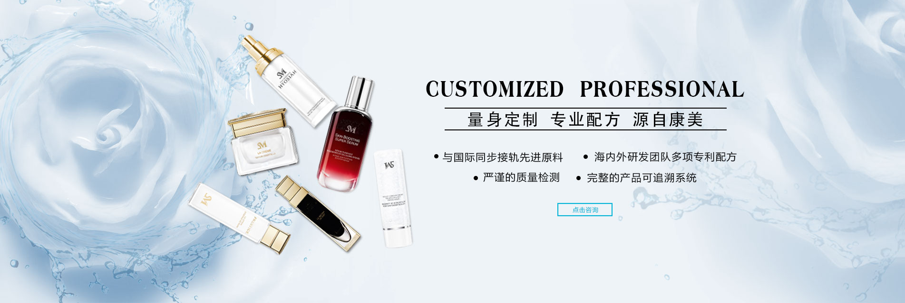

品牌简介
TAN MU JIAN JIE
心漾,致力于探索研究原始森林的生命力 以天然植物的有效成分通过鲜活的萃取技术以及先进的植物分子生物学注入满满植物能量让肌肤重拾满鲜复活等，一叶子致力于探索研究原始森林的生命力 以天然植物的有效成分，通过鲜活的萃取技术 以及先进的植物分子生物学 注入满满植物能量，让肌肤重拾满鲜复活，
让肌肤重现青春新品发布
XIN PIN FA BU

心漾,致力于探索研究原始森林的生命力 以天然植物的有效成分通过鲜活的萃取技术以及先进的植物分子生物学注入满满植物能量让肌肤重拾满鲜复活等，一叶子致力于探索研究原始森林的生命力 以天然植物的有效成分，通过鲜活的萃取技术 以及先进的植物分子生物学 注入满满植物能量，让肌肤重拾满鲜复活，
让肌肤重现青春